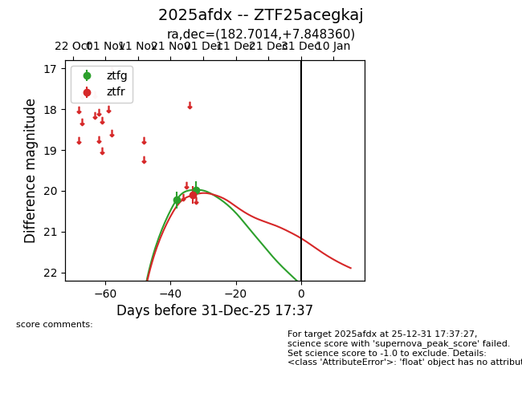
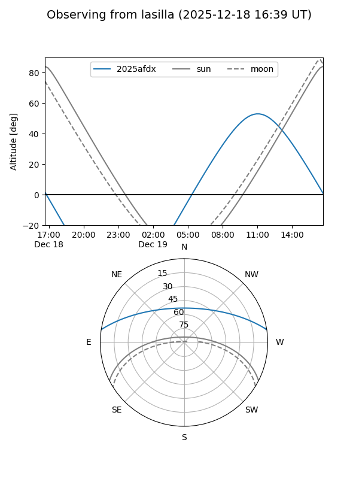
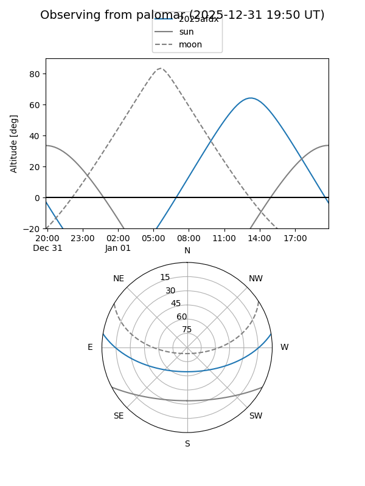

2025afdx
Target 2025afdx at 2025-12-31 16:59
Aliases and brokers:
FINK:
Lasair:
ALeRCE:
TNS:
YSE:
alt names
ZTF25acegkaj (ztf,fink_ztf)
2025afdx (tns,yse)
Coordinates:
equatorial (ra, dec) = 182.7014,+7.84836
equatorial (HMS+DMS) = 12:10:48.35,+07:50:54.10
galactic (l, b) = (274.5304,+68.44995)
Flags:
Photometry:
last ztfg=19.97, ztfr=20.11
2 ztfg, 1 ztfr detections
Lightcurve

Visibility


Additional plots